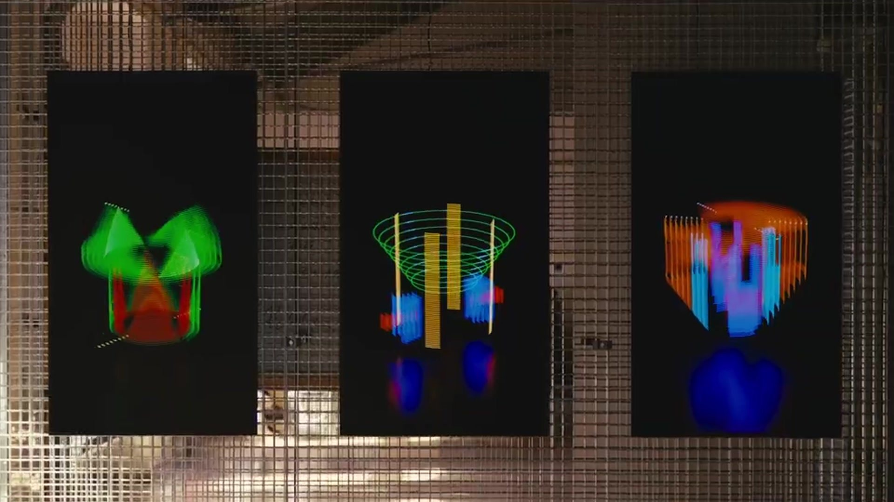
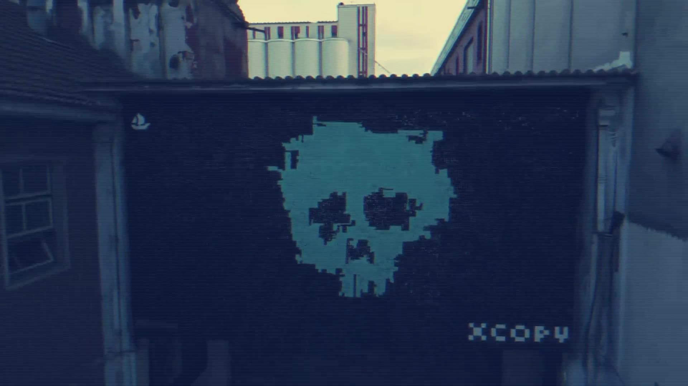

Lisbon · 2027
FAIR PLAY
An art fairground that runs on AI. Artists build the rides, you play, you leave with art.
By NFC Summit, the digital art festival of Lisbon
FAIR PLAY is an art exhibition in the shape of a fairground, with the machines of our time: AI. Artists build the rides, AI runs inside them, and every visitor leaves with an artwork. It starts online in January 2027, opens at NFC Summit in Lisbon, 27 to 29 May, and lives through the year: Devcon week in October, then Web Summit and Lisbon’s game week in November. The footage is the Art Factory at NFC Summit 2026.
Filmed at NFC Summit 2026, Lisbon
In 2027, Lisbon is the city of AI and creativity.
A museum show on AI, Devcon, Web Summit and NFC Summit, in one year.
Why now and why here. In 2027 Lisbon hosts, in the same year: NFC Summit in May, the opening of the exhibition “Energies of AI” at MAAT in September, Devcon in October, Web Summit and the city’s game week in November. The whole world of art, AI and technology walks through one city. Most exhibitions about AI ask the public to look, and to worry. FAIR PLAY is the optimistic one: you play.
Filmed at NFC Summit 2026, Lisbon
Our family in art history
Artists have always played
1926
Calder’s Circus A miniature fair, performed by the artist himself.
1959
Tinguely’s machines Machines that draw. Visitors made 4,000 drawings.
1987
Luna Luna Haring’s carousel, Basquiat’s Ferris wheel, Dalí’s pavilion.
2027
FAIR PLAY The same fair, with the machines of our time.
AI learned by playing. Now we play with it.
03
FAIR PLAY belongs to a family, and we say so. 1926: Alexander Calder builds his Circus in Paris, a miniature fair he performs himself; it is now at the Whitney Museum. 1959: Jean Tinguely shows his Méta-Matics at Galerie Iris Clert in Paris, machines that draw; visitors make about 4,000 drawings. 1961: Niki de Saint Phalle turns the shooting gallery into painting with her Tirs. 1968: Cybernetic Serendipity, at the ICA in London, the first large exhibition of art made with computers. 1987: Luna Luna, in Hamburg, by André Heller, the first art amusement park, with a carousel by Keith Haring, a Ferris wheel by Jean-Michel Basquiat and a pavilion by Salvador Dalí; restored and shown in Los Angeles in 2023 and New York in 2024. 2026: Dataland opens in Los Angeles as the first museum of AI art. Every ride of ours has an ancestor: the photobooth and the Surrealists’ Photomaton portraits (1929), the wheel and Marcel Duchamp’s roulette bond (1924), the robot portraitist and Tinguely, the arcade and the video games collected by MoMA since 2012. The second line of the slide: play is also where AI grew up. Deep Blue beat Garry Kasparov at chess in 1997; DeepMind’s first results came from Atari games, and AlphaGo beat Lee Sedol at Go in 2016; OpenAI Five beat the world champions at Dota 2 in 2019. For the labs, games are their own history. For the press: to our knowledge, FAIR PLAY is the first art fairground that runs on AI. Sources: Whitney Museum; Wikipedia (Métamatic, Cybernetic Serendipity, Luna Luna); Smithsonian Magazine; The Art Newspaper, 18 June 2026.
How every ride works
One minute, You pay for an artwork, never for a chance.
01
Pay Tap a card or a phone. No app, no account.
02
Play Sixty to ninety seconds. A camera watches you.
03
Generate AI turns your face and your score into a piece in the artist’s world.
04
Win Everyone gets a print. Beat the target for an edition.
04
Same four beats on every ride. Pay: tap a card or a phone. Play: sixty to ninety seconds, filmed. Generate: the partner’s model turns the player’s photo and performance into a piece in the artist’s style. Win: everyone gets a print, the target score gives an edition, the best score of the day a 1/1. On some rides the edition is digital: an NFT, sent to the player’s wallet or kept for them until they open one. The blockchain stays backstage: it is the receipt that says the piece is yours and the artist is credited. You pay for an artwork, never for a chance: that is the rule of the fair.
The machines · concept models
One artist per machine Ten photobooths You sit down. The artist’s model remakes your portrait.
Ten arcades The better you play, the better the artwork.
Ten claws You fish for a print. The AI made each one only once.
The Oracle Behind the curtain, a voice answers, and shows why.
Built by hand, signed by an artist, run by AI.
05
The fair is made of machines, and each one is signed by an artist. Each has a small screen on its side that says what the AI does. In series: ten photobooths, where the artist’s model remakes your portrait; ten arcades, where your score generates your artwork, so the better you play, the better the piece; ten claws, where you fish for a print that exists only once. Then the signature rides, starting with the Oracle, a fortune-teller cabin where a language and voice model answers behind a curtain. Also planned: a hall of doubles, a robot portraitist, darts, a shooting gallery. One container only in the exhibition. The machines are built by hand, in plywood, by the artists and a workshop; the partner’s tools run inside. The objects shown are concept models, not built yet, and the screens are illustrations.

Who builds them
The artists.
A breath. The artists come from the NFC network: more than 200 exhibited in 2026, in a four-floor Art Factory. The next slide shows three ideas, the one after the names.
Filmed at NFC Summit 2026, Lisbon
Three dream matches · ideas to open the conversation, not confirmed projects
What if they built a ride? The arcade
beeple A game made from the day’s news. Beat it, win the print of the day.
The blast game
Dangiuz Place the charges, push the plunger. The wall blows, his city appears.
The ghost train
XCOPY One car, no rails. The screens remix his loops with your face.
07
The rule of the matchmaking: the mechanic of the ride is the artist’s own gesture. beeple has made one picture a day since 1 May 2007, a daily satire of the news; at Art Basel Miami Beach in December 2025 his robot dogs photographed the public and printed the result. His ride: an arcade cabinet, one game, one print to win; the game is to be invented with him, our starting point is a level made each morning from the day’s news; what the game is about is his call. Dangiuz, the Italian artist Leopoldo D’Angelo, is known for his cyberpunk cities: neon streets, rain, a lone figure in front of an endless skyline. His ride: a video game with one real object, a detonator plunger; you place the charges on a grey wall, you push, the wall blows and one of his cities opens behind it, generated by an image model with you standing in it. The print is your view of the city. XCOPY is one of the founding names of crypto art; in 2022 he placed his work under CC0, free to reuse; a mural of The Doomed was painted at NFC Summit 2026. His ride, in a standalone version: one two-seat car that stays in place inside a stand or a container lined with screens; the screens do the travelling and an image model remixes his loops with the riders’ faces. Other matches we have in mind: Dmitri Cherniak and a game of darts where your darts become the pegs of the string; Gretchen Andrew and the Wheel of Odds; Sasha Stiles and the Oracle; Patrick Tresset and the robot portraitist. Status: ideas of ours. None of these artists has been asked.
From the NFC network
Shown in 2026. Wanted in 2027.
At NFC Summit 2026
XCOPY · Dmitri Cherniak · Larva Labs · Jack Butcher · Kim Asendorf · Gretchen Andrew · Vhils · Hackatao · Botto · Efdot · Coldie · Operator
Our wish list for the rides
beeple · Dangiuz · Sasha Stiles · Patrick Tresset · Mr Richi · Emi Kusano · Mad Dog Jones · DeafBeef · Snowfro · Trevor Jones
08
FAIR PLAY grows out of a festival that already shows the artists who matter in digital art. Left, the 2026 programme: a three-screen LED installation of Dmitri Cherniak’s Ringers; the exhibition SYSTEMS, curated by Nina Roehrs and presented by Arab Bank Switzerland, with Kim Asendorf, Jack Butcher, Linda Dounia and Larva Labs; Gretchen Andrew won the ABS Digital Art Prize; a mural of XCOPY’s The Doomed; site-specific installations by Vhils and BOLDTRON; Efdot in an OpenSea container gallery; a Botto pop-up; Hackatao and Coldie on screen; Operator on stage. More than 200 artists exhibited. Right, a wish list for the rides, not a line-up: none of them has been asked yet, conversations start in December, and an independent curator has the last word. The longer list also has Cypherdudes, Nicolas Sassoon, Bryan Brinkman, Karmic, Tschuuuly, die with the most likes, Amrit Pal Singh.
Why Lisbon, why 2027
One city, one year
Jan
Feb
Mar
Apr
May
Jun
Jul
Aug
Sep
Oct
Nov
Online · workshops, art jams, hackathon
27 — 29 May
Premiere at NFC Summit, with the Hackathon · AI Day
15 September
MAAT opens “Energies of AI”. Our panel and activations
12 — 14 October
Devcon week. The fair’s big week
November
Web Summit, then game week. Our panels close the season
09
One calendar for the city and for FAIR PLAY. From January, online: a monthly workshop where an artist of the season shows how they make art with the partner’s tools; initiations for beginners and families; four art jams; an online hackathon in February, whose best prototypes win a residency; and the first rides playable from a phone. March to May: residencies in Lisbon, eight to twelve projects. 27 to 29 May: the fair opens on the central plaza of NFC Summit, at the Unicorn Factory, with the Hackathon · AI Day on site. Summer: the fair travels across Lisbon. 15 September: MAAT opens “Energies of AI”, curated by Antonio Somaini, until 10 April 2028; that week we host a panel and activations. 12 to 14 October: Devcon IX, at the Lisbon Congress Centre, the fair’s big week; this is also where the on-chain side of FAIR PLAY is on show. 8 to 11 November: Web Summit. Mid-November: Lisbon’s game week, when Lisboa Games Week fills the FIL and DevGAMM brings the game industry to town; in 2026 they ran from 17 to 22 November, and the 2027 dates are not announced yet. We close the season that week with our own panels on games, art and AI, at our own venue: these are our events, not part of either programme.
The audience
A season in millions
Already in Lisbon · sourced
Our goals for the season
3M+
Tourists in Lisbon while the fair is open
86,000
People at Web Summit, Devcon and NFC Summit
1M
Artworks made by the public, on site and online
50M
Impressions across the season
Art you can play fills museums: teamLab’s two museums in Tokyo had 4.2 million visitors in 2025.
10
Two kinds of numbers, kept apart. Already in Lisbon, with sources. Tourists: 3.3 million guests stayed in the city in the first half of 2025 alone (INE, Statistics Portugal), and the fair is open during the busier half of the year. Tech and art crowds: Web Summit 71,386 attendees from 157 countries in 2025, Devcon 12,500 in 2024, NFC Summit 2,740 in 2026, about 86,000 together. In November the city’s game week adds a family crowd: Lisboa Games Week had 63,000 visitors in 2019. Lisbon families already go out for this kind of visit: 380,000 visitors at MAAT and 312,000 at the Pavilhão do Conhecimento science centre in 2024. And art you can play is what draws the biggest crowds: teamLab’s two museums in Tokyo had more than 4.2 million visitors in 2025. Our goals for the season, which are goals and not forecasts. One million artworks made by the public: on site, about forty machines and rides, around a hundred plays each per day, sixty open days between May and November, so about 200,000 plays; the rest comes from the online rides, played from a phone. Fifty million impressions: NFC Summit 2026 reached more than 6 million organic impressions in three days; the season lasts nine months, about forty artists share it with their own audiences, and every artwork is made to be shared by the person who made it. Third goal, not on the slide: 100,000 visitors on site.
For a founding partner
What you get
1M
People make an artwork with your model. Our goal for the season.
40
Artists build with your tools, in public, and show how.
5
Moments on stage in Lisbon, from NFC Summit in May to game week in November.
1
Founding lab. Your models inside the rides, all season.
Your model is credited on every artwork. You get the real numbers after every stop.
11
The return, in four figures. One: usage. Each play is one person who makes an artwork with the partner’s model, in a minute, and takes it home; the season goal is one million, on site and online. Two: artists. About forty artists build with the partner’s tools and say so; because a partner funds the fair, each of them only pays the cost of their package, in the workshops, in the residencies and on their machines; each one is a case study and a film. Three: stage. Five moments with press and an audience in Lisbon: the premiere at NFC Summit in May, MAAT week in September, Devcon week in October, Web Summit and the closing panels of game week in November. Four: one founding lab on the season. Every artwork carries the credit “made by the artist, with” the model. After every stop the partner gets a report: plays, artworks made, visitors, reach, press. Your part: your models generate the artworks inside the rides, your engineers and artists take part in the workshops, the hackathon and the residencies, your name signs the season. Our part: the artists, the production of the fair, and the audiences. An independent curator chooses the artists; the partner does not choose them and does not review the works. Nothing is used to train a model without the written agreement of the artist. The same season is open to other partners, who can sign a moment, a stop or a set of machines. The figures on this slide are goals for the season.
Built with you · starting points, excl. VAT
Four ways in
The fair at NFC FAIR PLAY at NFC Summit, 27 — 29 May, presented by you.
Platinum
The hackathon Developers and artists build the games of the fair with your tools.
Platinum
The residency 100 artists, 90 days online, then an exhibition in your name.
Platinum
The season Founding partner: the residency, the hackathon and the engine of the fair, all year.
Co-organizer
Every partnership is made to measure: these are the places to start. Each comes with its NFC sponsor level: logo, posts, a dedicated email, 20 passes, 8 VIP passes, a talk on the main stage.
12
Four ways in, as starting points: every partnership is built with the partner, and the price follows the scope. The fair at NFC, from €30,000, Platinum: FAIR PLAY at NFC Summit, 27 to 29 May, presented by one brand. The hackathon, from €50,000, Platinum: developers and artists build the games of the fair with the partner’s tools, online first, with the final on site. The residency, from €90,000, Platinum: 100 artists work with the partner’s tools for 90 days, then show the result in an exhibition in the partner’s name; about a third of the budget goes to the artists as grants and prizes. The season, from €250,000, co-organizer, one partner: the residency, the hackathon and the engine of the fair, from the online start in January to the closing in November. Platinum perks: logo on the website and the sponsor wall, 4 posts and 1 video, a dedicated email, 20 three-day passes, 8 VIP passes, 40 codes at −50%, a 10-minute talk on the main stage, category exclusivity. The AI Residency deck details each format for an AI lab.

FAIR PLAY · Lisbon 2027
Build a ride
By NFC Summit: 2,740 visitors from 79 countries and more than 200 artists in 2026.
John Karp · john@nonfungibleconference.com · t.me/thejonnkarp
Next step: a 20-minute call with John, then a proposal made for your team. Who is behind it: NFC Summit is the digital art and culture festival of Lisbon, founded by John Karp, in its sixth edition in 2027. In 2026: 2,740 visitors from 79 countries, more than 200 artists exhibited, more than 150 speakers, 6M+ organic impressions, at the Unicorn Factory, a former flour mill. In 2026 OpenSea ran two container galleries and Arab Bank Switzerland presented the exhibition SYSTEMS. Around 1,000 artists in the network, many already fluent with AI. Source: NFC Summit 2026 final report. The film: the mural of XCOPY’s The Doomed at NFC Summit 2026, by drone.
Filmed at NFC Summit 2026, Lisbon · mural: XCOPY, The Doomed